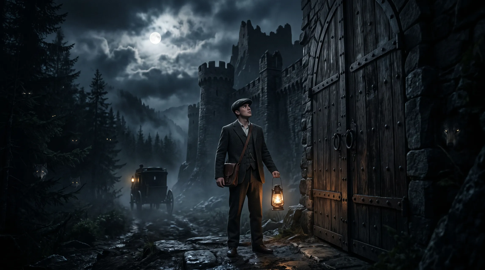

TV with a little more you in it.
Great stories.
Better together.
Find a world you love. Add your twist.
Or start a story everyone can build on.
Come for the story. Stay for what happens next.
You don’t need a whole story.
Just a little “what if?”
Some people start worlds. Some add a scene.
Some just come along for the ride.
There’s a part for everyone.
Find your way in
A beginning worth
getting lost in.
Pick a story. See where it takes you.
You can always take it somewhere else.
Stories available in Picsart TV. Open a story to watch and explore its paths.
One beginning. Everyone’s imagination.
The story doesn’t end.
It gets interesting.
One castle door. Two very different next scenes.
See how the community is unfolding Dracula.
He’s arrived at the castle.
What happens next?
The community takes it from here.
Two real continuations. The same opening scene.
Your twist can become someone else’s beginning.
That’s what makes it our TV.
A big imagination.
A very small learning curve.
No film school required. Just follow your curiosity.
- 1
Find your moment.
Explore a world that catches your eye. Enjoy what’s there, or choose a scene to continue.
- 2
Say “what if?”
Tell the story where to go next. A surprising visitor. A secret door. A completely different ending.
- 3
Let it grow.
Add your scene to a new path, then let someone else take the next turn. A story belongs to everyone who adds to it.
Take a peek inside Picsart TV
Every path has a story.
Follow an existing version or explore an open ending. The story map helps you find where you’d like to join in.
Product screenshot. Controls inside the image are a preview.
Or give us a whole new world.
It could start
with you.
A picture. A passing thought. That idea you can’t shake.
You don’t need to know the ending to make a beginning.
“What if my reflection
was a day ahead of me?”
There’s always
more to the story.
Especially when you’re part of it.
Can I just explore stories?+
Absolutely. Start with a world that looks interesting and enjoy where other people have taken it. Making your own scene is always your choice.
Do I need to know how to make films?+
No. Start with a simple idea or a moment you’d like to change. Describe what happens next in your own words. You can make a small contribution without planning an entire series.
Will my version replace someone else’s?+
Your version is a new path. The original stays available, so different ideas can grow from the same beginning.
What can I try on this page?+
Browse real stories and compare two existing Dracula continuations here. Explore stories and Start a story take you into the live Picsart TV stage app, where you can watch, direct and create. You can also sketch an idea locally and save it as a text file. Generation and publishing happen in the app, not on this page.